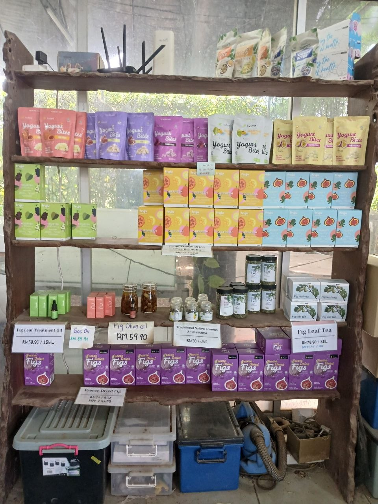

Sebagai pemilik dan pengurus Super Fruits Valley, Robin Lim bertanggungjawab mengawasi operasi pertanian bersama para pekerja.
Beliau turut menguruskan pemasaran produk, pengedaran serta pembangunan tanaman baru.
Pada masa kini, lebih daripada 200 jenis ulam-ulaman sedang dibangunkan dan beliau merancang untuk menambah lebih banyak jenis tanaman pada masa hadapan.
Walaupun ulam kurang popular dalam kalangan generasi muda, beliau tetap mahu memperkenalkan makanan sihat dan berkhasiat kepada masyarakat.
Disebabkan Perlis mempunyai populasi yang kecil, produk Super Fruits Valley dipasarkan ke kawasan lain seperti Pulau Pinang dan Kuala Lumpur.
Produk dijual melalui platform dalam talian seperti Shopee serta dipasarkan terus kepada restoran, hotel, resort dan pasar raya tanpa menggunakan orang tengah.
Selain buah-buahan segar, produk seperti yogurt, jus dan teh turut diproses untuk dijual sebagai produk makanan tempatan.